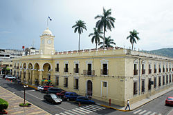
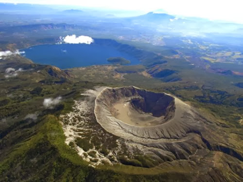

Santa Ana es un departamento ubicado en la zona occidental de El Salvador. Su cabecera es la ciudad de Santa Ana que cuenta con aproximadamente una población de 245,421 habitantes. El Departamento fue creado en 1855 durante la presidencia de José María San Martín.
Santa Ana es una ciudad salvadoreña, cabecera del municipio, departamento, distrito y sede de la diócesis homónimos; y es la ciudad principal de la zona occidental, y segunda ciudad en importancia de El Salvador, ubicada a 64 km de la capital estatal, San Salvador.
El municipio de Santa Ana tiene una población estimada de 264 091 habitantes para el año 2013, ocupando el segundo lugar en población. Para su administración se divide en 34 cantones y 312 caseríos,6 mientras que la propia ciudad se divide en 12 barrios y varias colonias.7
La ciudad cuenta con parques acuáticos y balnearios, tal como: el Turicentro Sihuatehuacán el cual se encuentra al Oriente de la ciudad, siendo administrado por el Instituto Salvadoreño de Turismo y es uno de los más tradicionales destinos turísticos del país;94 al norte de la ciudad se encuentran los balnearios de Apantéos y Apanchacal,95 al oriente de la ciudad se encuentra el centro turístico Sapoapa96 (este centro turístico y los balneario de Apantéos y Apanchacal son administrados por la alcaldía municipal).
